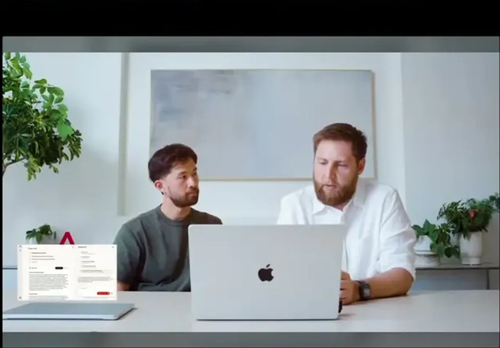
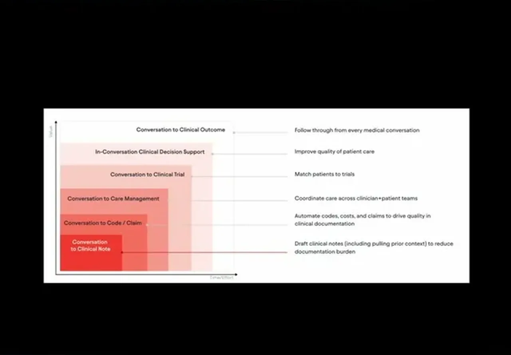
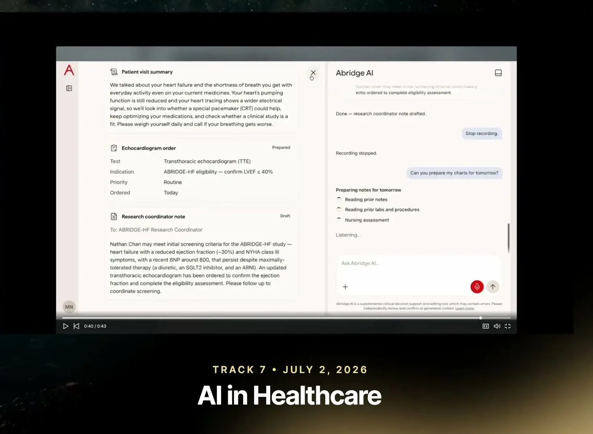
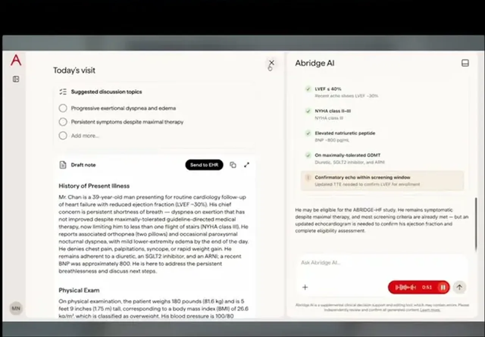
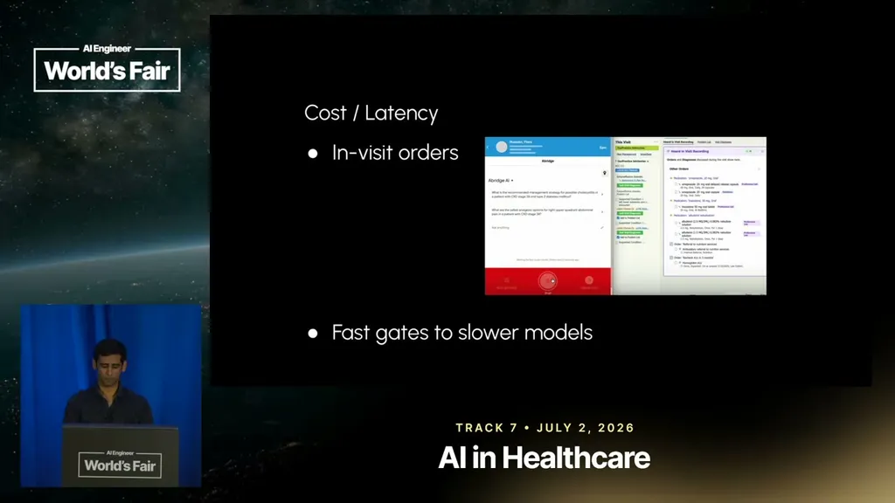
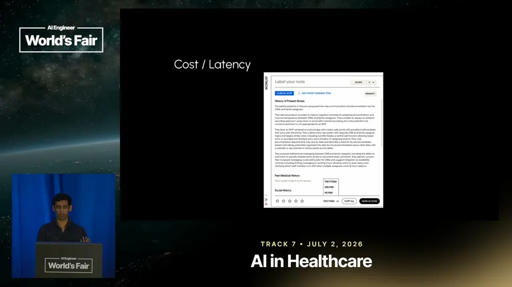

From Ambient Documentation to Clinical Intelligence
Abridge combines physician-authored multi-clinician rubrics, small post-trained models per note section, and clinical decision support serving 300 US health systems at a 100M annual conversation run rate.
If you only read one thing
- Abridge reached 300 of the largest US health systems, including Kaiser, Mayo, and Johns Hopkins, within 2 to 3 years, after starting from clinicians spending about 2 hours a day writing notes (c1, c2).
- It now runs clinical decision support live across a run rate of 100 million medical conversations a year, treating quality, latency, and cost as harder than in a typical agentic product (c3, c6).
- Because clinical QA has a small generator-verifier gap, Abridge builds evaluation rubrics from multiple independent physicians rather than trusting a single golden answer or LM judge alone (c5).
This links three threads from the talk: the conversation-to-outcome product ladder, the four-clinician rubric process the LM judge scores against, and the gate-then-model routing that keeps clinical decision support cheap and fast at 100M conversations a year (ours).
Why this talk is a blueprint, not a take (ours)
Scope: Abridge's clinical AI stack: ambient documentation for SOAP notes, expanding via the same doctor-patient conversation into in-visit clinical decision support and order entry, evaluated with physician-authored rubrics and served through small post-trained models at scale.
A conversation-centered architecture where one input (the doctor-patient conversation) feeds a ladder of products (note, coding/billing, care management, trial matching, in-visit decision support), evaluated by multi-physician rubrics adjudicated and QA'd before an LM judge scores against them, and served cheaply via small post-trained models gated by cheaper event-detection models rather than one frontier model running continuously.
Prerequisites the talk implies:
- A live audio/conversation capture pipeline already integrated with the EHR and clinical workflow
- Access to physicians willing to author, adjudicate, and QA evaluation rubrics for each clinical case type
- A large, proprietary conversation dataset to post-train small per-section models on
- An offline benchmark plus staged rollout process (alpha clinicians, beta, monitoring) before any new capability goes live
What the talk does not say:
- No numbers on how many physicians, models, or engineers the evaluation and routing process requires to run
- No accuracy, error-rate, or judge-agreement statistics, only a description of the rubric process
- No cost figures for the post-trained models versus a frontier-model baseline
- No detail on how the gates that trigger heavier order-matching models are tuned or how often they miss
If you were to replicate one thing first: Before building any post-trained models, stand up the physician-rubric evaluation pipeline (two independent authors, one adjudicator, one QA reviewer) for a single high-stakes use case, since that rubric is what everything else gets hill-climbed against.
| Component | What it does (from the talk) | Evidence | Slide |
|---|---|---|---|
| Clinical note generation | Drafts SOAP-style clinical note sections from the doctor-patient conversation; the original product that scaled to 300 health systems. | c2 · 06:50 |  |
| Product ladder (conversation to outcome) | Expands from conversation-to-note into billing/coding, care management, clinical trial matching, and in-conversation clinical decision support, all treated as downstream of the same conversation. | c8 · 08:25 |  |
| In-conversation clinical decision support | Answers a provider's in-visit question using EHR context, the live conversation, and clinical guidelines/literature; treated as higher-stakes than a typical agentic product. | c6 · 11:28 |  |
| Independent physician rubrics | Two independent physicians each write a rubric of response elements for a clinical case, since there is no single golden answer to compare against. | c5 · 17:11 |  |
| Adjudicating physician + fourth-clinician QA | A separate physician merges the two rubrics into a final rubric, and a fourth clinician QAs the result before it is used for scoring. | c5 · 17:11 | |
| LM judge | Scores the agent's live response against the physician-authored, QA'd rubric via semantic match, used to hill-climb the agent, models, and search ranking. | c5 · 17:11 | |
| Cheaper, faster gates | Detect the right conversational event (e.g., an order being mentioned) before triggering heavier matching models, instead of continuously running expensive matching on every few seconds of audio. | c7 · 20:20 |  |
| Small post-trained models | Many specialized models post-trained per clinical-note sub-problem, down to individual note sections, instead of one frontier model for everything. | c4 · 18:45 |  |
| Live scale | The deployed footprint the eval and cost engineering has to hold up under: a run rate of 100 million medical conversations a year. | c3 · 17:43 |

From clinical documentation to clinical intelligence
- Abridge started with clinical note generation: clinicians typically spend about 2 hours a day writing SOAP notes, often as unpaid 'pajama time' after their shift.
- That single product scaled to 300 of the largest health systems in the US, including Kaiser, Mayo, Johns Hopkins, and Sutter, within 2 to 3 years, and the company is now expanding from documentation into voice-driven clinical decision support and order entry built on the same doctor-patient conversation.
- The company frames every later product (coding/claims, care management, clinical trial matching, in-conversation decision support) as downstream of that same conversation.
“a bridge in the matter of 2 to 3 years got its way into 300 of the largest health systems in the United States, Kaiser, Mayo, Johns Hopkins, Sutter, and so forth”
said at 04:44“it takes like 2 hours a day to write just write these notes and you often do it with what's known as pajama time after work itself”
said at 06:50“the core thesis of the company is that every year in health care is everything is around the conversation. So, we started over here with the conversation to clinical note. Everything else is downstream of that.”
said at 08:25Playing healthcare on hard mode
- The talk frames quality, latency, and cost as the same three KPIs any agentic product cares about, but harder in healthcare: being wrong in clinical decision support has real consequences and can cost all user trust, unlike a generic workplace tool.
- Abridge now runs its clinical decision support live, on a run rate of 100 million medical conversations a year.
“In healthcare, I feel that we're actually playing on hard mode for all of these three KPIs”
said at 11:28“we do on the run rate of 100 million medical conversations a year”
said at 17:43Evals as the operating system
- Because the gap between generating a clinical answer and verifying it is small, unlike a problem like Sudoku where verification is easy, Abridge can't rely on a single golden response.
- Instead, independent physicians each write a rubric for a given case, a separate physician adjudicates the two rubrics into a final version, and a fourth clinician does QA on the result before an LM judge scores the agent's response against it.
“we had a separate physician that actually adjudicated it, brought these two independent rubrics together, created a final rubric, and we actually had a fourth clinician do QA on these rubrics”
said at 17:11Keeping cost and latency down at scale
- Rather than use a frontier model for every part of a clinical note, Abridge post-trains many smaller, specialized models per sub-problem, down to the granularity of individual note sections, to cut cost and latency where quality is already maxed out.
- For in-visit order matching, it uses cheaper, faster gates to detect the right conversational events before triggering the heavier models that do the actual matching, rather than continuously running expensive matching on every few seconds of audio.
“We we don't need frontier level intelligence for every problem. So, we actually post train a lot of smaller models for different problems”
said at 18:45“we have a number of different gates that are cheaper and faster that let us trigger actually larger models and hand off to them for actually doing the end-to-end work”
said at 20:20Underlying detail — every claim, typed and timestamped (8)
| Stance | Claim | t |
|---|---|---|
| asserts | Abridge reached 300 of the largest health systems in the US, including Kaiser, Mayo, Johns Hopkins, and Sutter, within 2 to 3 years. | 04:44 |
| asserts | Clinicians typically spend about 2 hours a day writing clinical notes, often as unpaid 'pajama time' after their shift ends. | 06:50 |
| asserts | Abridge runs clinical decision support live on a run rate of 100 million medical conversations a year. | 17:43 |
| asserts | Rather than use a frontier model for every clinical-note section, Abridge post-trains many smaller, specialized models per sub-problem to cut cost and latency, betting its unique conversation dataset gives it a 'right to win' on quality too. | 18:45 |
| recommends | To evaluate clinical decision support where the generator-verifier gap is small, Abridge has independent physicians each write a rubric, a separate physician adjudicate the two into a final rubric, and a fourth clinician QA the result before an LM judge scores against it. | 17:11 |
| asserts | Abridge treats quality, latency, and cost as harder in healthcare than in a typical agentic product, because being wrong in clinical decision support has real consequences and can cost all user trust. | 11:28 |
| asserts | For in-visit order matching, Abridge uses cheaper, faster gates to detect the right conversational events before triggering heavier models, rather than continuously running expensive matching on every few seconds of audio. | 20:20 |
| asserts | Abridge's roadmap treats the doctor-patient conversation as the source for everything downstream: billing, clinical trial matching, care management, and clinical decision support, expanding from the original clinical-note product. | 08:25 |
Machine-readable copy embedded in this page (script#ontology) and in the corpus ontology.